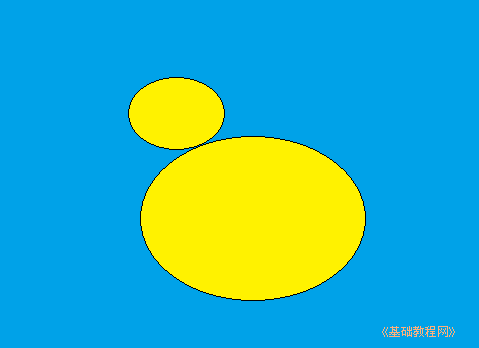

Windows7 基础入门教程
作者：TeliuTe 来源：基础教程网
八、学习画图 返回目录 下一课前面我们已经学习了鼠标和键盘，那么怎样在电脑中画出一幅图画来呢？我们来看一个练习；
1、启动程序
1）单击“开始－所有程序－附件－画图”，这样就打开了画图窗口
2）在窗口中，上边是工具栏，里面包含有菜单按钮和许多画图工具，像铅笔、线条、颜色等；
3）中间是工作区，里面有一个空白的画布，可以在里面画画；
窗口最上边还有两个标签，主页和查看，查看标签里可以放大和缩小画布视图；
2、绘图操作
1）在工具箱里头选择油漆桶工具，选择颜色2，在颜料盒中点选蓝色，
然后在中间白纸上点一下右键(注意是右键)，把纸喷成蓝色背景，我们要画一个小鸭；
2）再在形状里选择“椭圆”，选择颜色1，在颜料盒中选择黑色，在纸上画两个椭圆，作为小鸭的头和身子；
3）再选择油漆桶工具，选择颜色1，在颜料盒中点选择黄色，点左键在两个圆中间喷上黄色；

4）再选择椭圆工具，画一个小圆喷上黑色作为眼睛，再选刷子工具，再在颜色中选黄色，把小鸭的眼睛点出来；
5）再选择直线工具，给小鸭子画上嘴巴并喷上黄色，画嘴巴不能有漏洞，
如果喷错了，就点上边的撤消按钮，或者按一下 Ctrl＋Z 撤销，两个键同时按；
6）再用铅笔给小鸭画上翅膀，画上水波就完成了；
7）点菜单“文件－保存”命令，以“小鸭”为文件名，保存文件到自己的文件夹中；
本节学习了画图程序的基础知识，如果你成功地完成了练习，请继续学习下一课内容；
本教程由86团学校TeliuTe制作|著作权所有
基础教程网：>http://teliute.org/
美丽的校园……
转载和引用本站内容，请保留版权信息和本站链接。